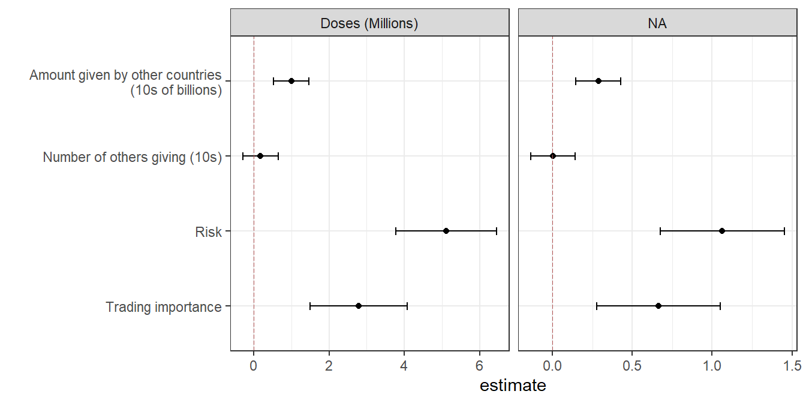
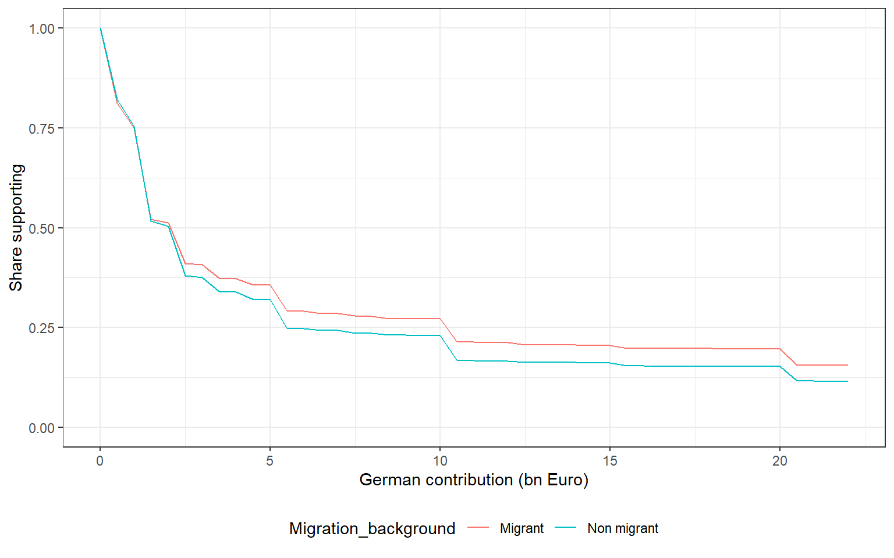
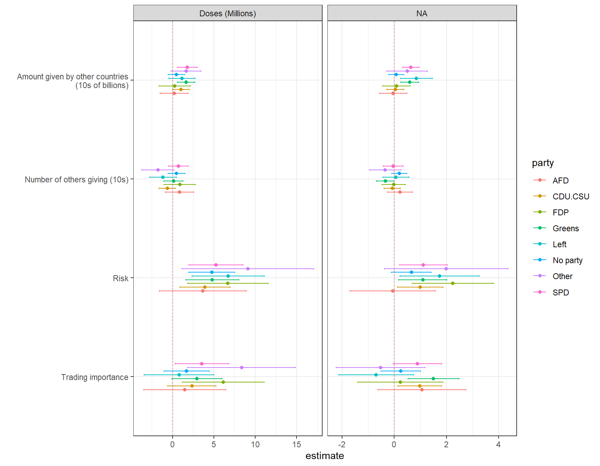

library(rep1371journalpone0278337)
library(dplyr)
library(ggplot2)
library(egg)
library(estimatr)
library(bbmle)
library(broom)
library(modelsummary)
library(kableExtra)
ns <- asNamespace("rep1371journalpone0278337")
clean_replication_source <- ns$clean_replication_source
show_make_source <- ns$show_make_sourceThis document reproduces the main tables and figures from “Vaccine solidarity replication”. See analysis.Rmd for the original replication material.
The tables and figures are generated by using the functions that are defined in the replication package. e.g.
make_table_1(wave4_conjoint)make_figure_1(wave4_conjoint)
But these also play nicely with functions in replicate_everything and so one could also run:
run_replication("fig_1")run_replication("tab_1")
The rest of the file runs these functions for each figure and table and also displays the underlying code.
Setup
Data
Data is drawn from the package
The source repository rebuilds df_4 and df_2 from raw CSV exports. This package ships prepared wave4_conjoint, wave2_survey, and vignette_labels. Rebuild from raw data with prep_data() when needed.
$wave4_rows
[1] 21050
$wave2_rows
[1] 13782Analysis: main results
Figure 1: Distribution of support for contributions of different sizes
Implementation: R/make_figure_1.R
wave4_conjoint |>
make_figure_1() |>
format_figure_1()
Show underlying code
R/make_figure_1.R
make_figure_1 <- function(data = wave4_conjoint) {
grids <- amount_grids()
s1 <- dplyr::bind_rows(
Low = support_curve(
data[data$risk_factor == "Low" & data$trading_factor == "Low", "cash_billions", drop = TRUE],
grids$cash
),
High = support_curve(
data[data$risk_factor == "High" & data$trading_factor == "High", "cash_billions", drop = TRUE],
grids$cash
),
.id = "Costs"
)
s2 <- dplyr::bind_rows(
Low = support_curve(
data[data$deal == "No deal", "cash_billions", drop = TRUE],
grids$cash
),
High = support_curve(
data[data$deal == "40 give 40 bn", "cash_billions", drop = TRUE],
grids$cash
),
.id = "Multilateralism"
)
s3 <- dplyr::bind_rows(
Low = support_curve(
data[data$risk_factor == "Low" & data$trading_factor == "Low", "doses", drop = TRUE],
grids$vaccines
),
High = support_curve(
data[data$risk_factor == "Low" & data$trading_factor == "High", "doses", drop = TRUE],
grids$vaccines
),
.id = "Costs"
)
s4 <- dplyr::bind_rows(
Low = support_curve(
data[data$deal == "No deal", "doses", drop = TRUE],
grids$vaccines
),
High = support_curve(
data[data$deal == "40 give 40 bn", "doses", drop = TRUE],
grids$vaccines
),
.id = "Multilateralism"
)
egg::ggarrange(
ggplot2::ggplot(s1, ggplot2::aes(.data$amounts, .data$support, color = .data$Costs)) +
ggplot2::geom_line() + ggplot2::ylim(0, 1) + ggplot2::theme_bw() +
ggplot2::xlab("German contribution (bn Euro)") + ggplot2::ylab("Share supporting") +
ggplot2::theme(legend.position = "bottom"),
ggplot2::ggplot(s2, ggplot2::aes(.data$amounts, .data$support, color = .data$Multilateralism)) +
ggplot2::geom_line() + ggplot2::ylim(0, 1) + ggplot2::theme_bw() +
ggplot2::xlab("German contribution (bn Euro)") + ggplot2::ylab("Share supporting") +
ggplot2::theme(legend.position = "bottom") + ggplot2::ylab(""),
ggplot2::ggplot(s3, ggplot2::aes(.data$amounts, .data$support, color = .data$Costs)) +
ggplot2::geom_line() + ggplot2::ylim(0, 1) + ggplot2::theme_bw() +
ggplot2::xlab("German contribution (mio vaccines)") + ggplot2::ylab("Share supporting") +
ggplot2::theme(legend.position = "bottom"),
ggplot2::ggplot(s4, ggplot2::aes(.data$amounts, .data$support, color = .data$Multilateralism)) +
ggplot2::geom_line() + ggplot2::ylim(0, 1) + ggplot2::theme_bw() +
ggplot2::xlab("German contribution (mio vaccines)") + ggplot2::ylab("Share supporting") +
ggplot2::theme(legend.position = "bottom") + ggplot2::ylab(""),
nrow = 2,
ncol = 2
)
}Figure 2: Marginal effects of conditions
Implementation: R/make_figure_2.R
The average proposal is 8.67 billion Euros and 78 million doses. The median proposal is 2 billion Euros and 90 million doses.
wave4_conjoint |>
make_figure_2() |>
format_figure_2()
Show underlying code
R/make_figure_2.R
make_figure_2 <- function(data = wave4_conjoint) {
plot_marginal_effects(fit_marginal_effects(data))
}Figure 3: Effect of video treatment on individual solidarity
Implementation: R/make_figure_3.R
wave2_survey |>
make_figure_3() |>
format_figure_3()
Show underlying code
R/make_figure_3.R
make_figure_3 <- function(data = wave2_survey) {
outcomes <- c("solidarity_behaviour", "solidarity_attitude")
outcome_labels <- c("Solidarity Behavior", "Solidarity Attitude")
models_basic <- stats::setNames(
lapply(outcomes, function(y) {
estimatr::lm_robust(
stats::as.formula(paste(y, "~ treatment_video")),
data = data
)
}),
outcomes
)
dplyr::bind_rows(lapply(models_basic, broom::tidy), .id = "outcome") |>
dplyr::filter(.data$term != "(Intercept)") |>
dplyr::mutate(outcome = factor(.data$outcome, outcomes, outcome_labels)) |>
ggplot2::ggplot(ggplot2::aes(.data$estimate, .data$outcome)) +
ggplot2::geom_point() +
ggplot2::geom_errorbar(
ggplot2::aes(xmin = .data$conf.low, xmax = .data$conf.high),
width = 0.1
) +
ggplot2::geom_vline(
xintercept = 0,
linetype = "longdash",
lwd = 0.35,
colour = "#B55555"
) +
ggplot2::theme_bw() +
ggplot2::ggtitle("Effect of video treatment") +
ggplot2::ylab("")
}Additional Results
Figure 4: Levels of support by party
Implementation: R/make_figure_4.R
wave4_conjoint |>
make_figure_4() |>
format_figure_4()
Show underlying code
R/make_figure_4.R
make_figure_4 <- function(data = wave4_conjoint) {
grids <- amount_grids()
sp <- lapply(unique(data$party), function(p) {
support_curve(
data[data$party == p, "cash_billions", drop = TRUE],
grids$cash
)
})
names(sp) <- unique(data$party)
sp <- dplyr::bind_rows(sp, .id = "Party")
ggplot2::ggplot(sp, ggplot2::aes(.data$amounts, .data$support, color = .data$Party)) +
ggplot2::geom_line() +
ggplot2::ylim(0, 1) +
ggplot2::theme_bw() +
ggplot2::xlab("German contribution (bn Euro)") +
ggplot2::ylab("Share supporting") +
ggplot2::theme(legend.position = "bottom")
}Figure 5: Levels of support by migration background
Implementation: R/make_figure_5.R
wave4_conjoint |>
make_figure_5() |>
format_figure_5()
Show underlying code
R/make_figure_5.R
make_figure_5 <- function(data = wave4_conjoint) {
grids <- amount_grids()
sm <- lapply(0:1, function(m) {
support_curve(
data[data$migration_background == m, "cash_billions", drop = TRUE],
grids$cash
)
})
names(sm) <- c("Non migrant", "Migrant")
sm <- dplyr::bind_rows(sm, .id = "Migration_background")
ggplot2::ggplot(
sm,
ggplot2::aes(.data$amounts, .data$support, color = .data$Migration_background)
) +
ggplot2::geom_line() +
ggplot2::ylim(0, 1) +
ggplot2::theme_bw() +
ggplot2::xlab("German contribution (bn Euro)") +
ggplot2::ylab("Share supporting") +
ggplot2::theme(legend.position = "bottom")
}Figure 6: Marginal effects of conditions by party
Implementation: R/make_figure_6.R
wave4_conjoint |>
make_figure_6() |>
format_figure_6()
Show underlying code
R/make_figure_6.R
make_figure_6 <- function(data = wave4_conjoint) {
plot_marginal_effects(
fit_marginal_effects_by(data, "party"),
group_var = "party",
flip_axes = TRUE
)
}Figure 7: Marginal effects of conditions by migration background
Implementation: R/make_figure_7.R
wave4_conjoint |>
make_figure_7() |>
format_figure_7()
Show underlying code
R/make_figure_7.R
make_figure_7 <- function(data = wave4_conjoint) {
plot_marginal_effects(
fit_marginal_effects_by(data, "migration_background"),
group_var = "migration_background",
flip_axes = TRUE
)
}Figure 8: Results refreshment sample
Implementation: R/make_figure_8.R
wave4_conjoint |>
make_figure_8() |>
format_figure_8()
Show underlying code
R/make_figure_8.R
make_figure_8 <- function(data = wave4_conjoint) {
results <- fit_marginal_effects_by(data, "group")
results$group <- factor(
results$group,
levels = c(4, 5),
labels = c("refreshment", "main")
)
plot_marginal_effects(
results,
group_var = "group",
flip_axes = TRUE
)
}Table 1: Structural analysis
Implementation: R/make_table_1.R
We assume
where is trading importance, is health risk, is total amount given by other countries, and is average amount given by other countries.
wave4_conjoint |>
make_table_1() |>
format_table_1() |>
knitr::asis_output()| parameter | estimate | std.error | statistic | p.value | conf.low | conf.high |
|---|---|---|---|---|---|---|
| α | 240.62 | 2.01 | 119.73 | 0.00 | 236.68 | 244.56 |
| β | -10.32 | 12.71 | -0.81 | 0.42 | -35.23 | 14.59 |
| δ | 37.79 | 12.45 | 3.04 | 0.00 | 13.40 | 62.19 |
| γ | 0.61 | 0.07 | 9.22 | 0.00 | 0.48 | 0.75 |
| κ | 5.22 | 0.40 | 13.06 | 0.00 | 4.44 | 6.00 |
| σ | 15.98 | 0.08 | 205.18 | 0.00 | 15.83 | 16.14 |
Show underlying code
R/make_table_1.R
make_table_1 <- function(data = wave4_conjoint) {
df_4 <- dplyr::mutate(data, x = .data$cash_billions)
LL <- function(a = 1, b = 1, c = 1, g = 1, k = 1, sigma = 1) {
R <- mapply(
structural_lik_x,
df_4$x,
MoreArgs = list(
sigma = sigma,
a = a,
b = b,
c = c,
g = g,
k = k,
ZT = df_4$trading_importance,
ZR = df_4$risk,
ZY = df_4$others_giving,
Zy = df_4$others_average
)
)
-sum(log(R))
}
fit <- bbmle::mle2(
LL,
optimizer = "nlminb",
start = list(a = 240, b = -11, c = 41, g = 0.8, k = 4, sigma = 16),
lower = list(a = 0, b = -20, c = -60, g = 0.01, k = -10, sigma = 0.02),
upper = list(a = 400, b = 20, c = 60, g = 5, k = 10, sigma = 30)
)
out <- as.data.frame(bbmle::coef(bbmle::summary(fit)))
names(out) <- c("estimate", "std.error", "statistic", "p.value")
out |>
dplyr::mutate(parameter = c("\u03b1", "\u03b2", "\u03b4", "\u03b3", "\u03ba", "\u03c3")) |>
dplyr::relocate(.data$parameter) |>
dplyr::mutate(
conf.low = .data$estimate - 1.96 * .data$std.error,
conf.high = .data$estimate + 1.96 * .data$std.error
) |>
dplyr::mutate(dplyr::across(where(is.numeric), ~ round(.x, 2)))
}Table 2: Wave 2 conjoint (additional analyses)
Implementation: R/make_table_2.R
make_table_2(wave2_survey, vignette_labels) |>
format_table_2() |>
knitr::asis_output()| rating | choice | |
|---|---|---|
| Constant (Average rating) | 0.172*** | 0.529*** |
| (0.028) | (0.007) | |
| Video effect (given ungenerous agreement) | −0.190*** | −0.044*** |
| (0.041) | (0.010) | |
| German contribution | −0.101*** | −0.030*** |
| (0.009) | (0.002) | |
| German share | −0.097*** | −0.022*** |
| (0.009) | (0.002) | |
| Number of donors | 0.165*** | 0.058*** |
| (0.012) | (0.003) | |
| Economic benefits | −0.209*** | −0.053*** |
| (0.020) | (0.005) | |
| Health benefits | 0.133*** | 0.036*** |
| (0.020) | (0.005) | |
| Video * Contribution | 0.060*** | 0.020*** |
| (0.013) | (0.003) | |
| Video * Share | 0.020 | 0.002 |
| (0.013) | (0.003) | |
| Video * Donors | 0.095*** | 0.019*** |
| (0.017) | (0.004) | |
| Video * Economics | −0.011 | −0.008 |
| (0.028) | (0.007) | |
| Video * Health | −0.048 | −0.014* |
| (0.028) | (0.007) | |
| R2 | 0.015 | 0.021 |
| R2 Adj. | 0.015 | 0.021 |
| Num.Obs. | 82692 | 82692 |
| RMSE | 2.03 | 0.49 |
| *** p<0.001; ** p<0.01; * p<0.05 |
Show underlying code
R/make_table_2.R
make_table_2 <- function(survey = wave2_survey, labels = vignette_labels) {
conjoints_norm <- prep_data_tab_2(survey, labels)
models_treatments <- list(
rating = estimatr::lm_robust(
rating ~ treatment_video * vig_doses + treatment_video * vig_dose_share +
treatment_video * vig_countries + treatment_video * vig_benefit_economic +
treatment_video * vig_benefit_health,
data = conjoints_norm
),
choice = estimatr::lm_robust(
outcome ~ treatment_video * vig_doses + treatment_video * vig_dose_share +
treatment_video * vig_countries + treatment_video * vig_benefit_economic +
treatment_video * vig_benefit_health,
data = conjoints_norm
)
)
coef_map <- c(
"(Intercept)" = "Constant (Average rating)",
"treatment_video" = "Video effect (given ungenerous agreement)",
"vig_doses" = "German contribution",
"vig_dose_share" = "German share",
"vig_countries" = "Number of donors",
"vig_benefit_economic" = "Economic benefits",
"vig_benefit_health" = "Health benefits",
"treatment_video:vig_doses" = "Video * Contribution",
"treatment_video:vig_dose_share" = "Video * Share",
"treatment_video:vig_countries" = "Video * Donors",
"treatment_video:vig_benefit_economic" = "Video * Economics",
"treatment_video:vig_benefit_health" = "Video * Health"
)
modelsummary::modelsummary(
models_treatments,
coef_map = coef_map,
estimate = "{estimate}{stars}",
statistic = "({std.error})",
output = "kableExtra",
stars = c("***" = 0.001, "**" = 0.01, "*" = 0.05),
gof_map = c("r.squared", "adj.r.squared", "nobs", "rmse"),
title = "Effects of treatment on drivers of support for agreements.",
notes = "*** p<0.001; ** p<0.01; * p<0.05",
colnames = c("rating", "choice")
)
}Session info
R version 4.6.0 (2026-04-24 ucrt)
Platform: x86_64-w64-mingw32/x64
Running under: Windows 11 x64 (build 26200)
Matrix products: default
LAPACK version 3.12.1
locale:
[1] LC_COLLATE=English_United States.utf8
[2] LC_CTYPE=English_United States.utf8
[3] LC_MONETARY=English_United States.utf8
[4] LC_NUMERIC=C
[5] LC_TIME=English_United States.utf8
time zone: Europe/Berlin
tzcode source: internal
attached base packages:
[1] stats4 stats graphics grDevices utils datasets methods
[8] base
other attached packages:
[1] kableExtra_1.4.0 modelsummary_2.6.0
[3] broom_1.0.13 bbmle_1.0.25.1
[5] estimatr_1.0.6 egg_0.4.5
[7] gridExtra_2.3 ggplot2_4.0.3
[9] dplyr_1.2.1 rep1371journalpone0278337_0.1.0
loaded via a namespace (and not attached):
[1] generics_0.1.4 tidyr_1.3.2 xml2_1.5.2
[4] stringi_1.8.7 lattice_0.22-9 digest_0.6.39
[7] magrittr_2.0.5 evaluate_1.0.5 grid_4.6.0
[10] RColorBrewer_1.1-3 mvtnorm_1.4-1 fastmap_1.2.0
[13] jsonlite_2.0.0 Matrix_1.7-5 backports_1.5.1
[16] Formula_1.2-5 httr_1.4.8 purrr_1.2.2
[19] viridisLite_0.4.3 scales_1.4.0 codetools_0.2-20
[22] textshaping_1.0.5 numDeriv_2016.8-1.1 cli_3.6.6
[25] rlang_1.2.0 texreg_1.39.5 withr_3.0.2
[28] yaml_2.3.12 otel_0.2.0 tools_4.6.0
[31] bdsmatrix_1.3-7 vctrs_0.7.3 R6_2.6.1
[34] lifecycle_1.0.5 stringr_1.6.0 htmlwidgets_1.6.4
[37] MASS_7.3-65 pkgconfig_2.0.3 pillar_1.11.1
[40] gtable_0.3.6 data.table_1.18.4 glue_1.8.1
[43] Rcpp_1.1.1-1.1 systemfonts_1.3.2 xfun_0.58
[46] tibble_3.3.1 tidyselect_1.2.1 rstudioapi_0.19.0
[49] knitr_1.51 farver_2.1.2 tables_0.9.35
[52] htmltools_0.5.9 svglite_2.2.2 rmarkdown_2.31
[55] compiler_4.6.0 S7_0.2.2